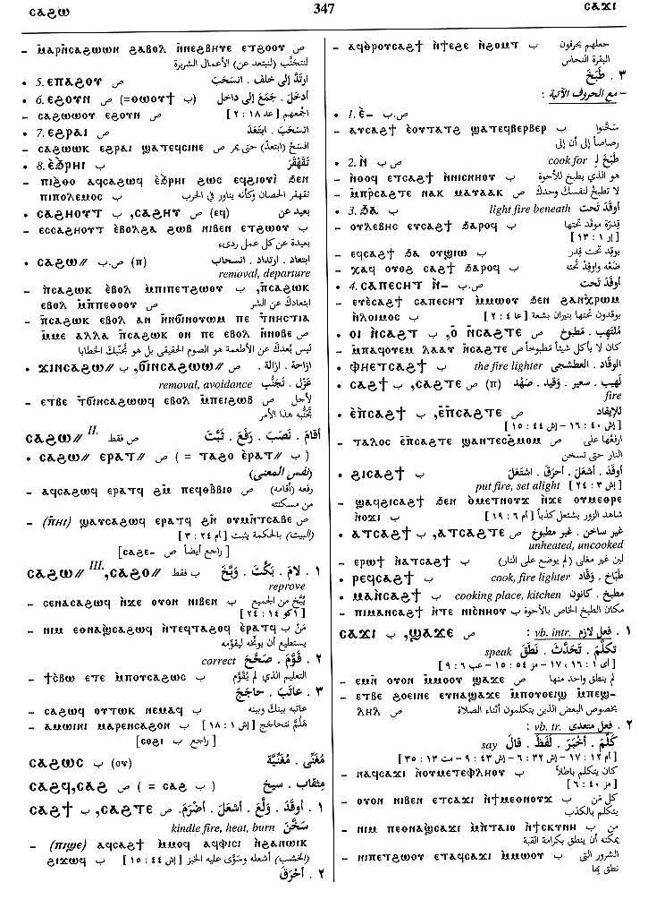

(verb)
intr: kindle fire, heat thereby [μαγειρισσα γινεσθαι,
εξημα ποιειν]
tr: S,B, kindle, burn [καιειν]
tr: S,B, kindle, burn [καιειν]
(S)
ⲥⲁϩⲧⲉ
(B) ⲥⲁϩϯ
(F) ⲥⲉϩϯ
(B) ⲥⲁϩϯ
(F) ⲥⲉϩϯ
| intr :6461 | Crum: 387a | ||||||||
| (B) ⲉ- (c) | 6462 | ||||||||
| (B) ⲥⲁⲡⲉⲥⲏⲧ ⲛ- (c) | [υποκαιειν]6463 | ||||||||
| (S, B, F) ϩⲁ-, ϧⲁ- (c) | light fire beneath6464 | ||||||||
| (S, B) ― (ⲡ) | (noun male)
fire [φωσ, καυσισ]2132 |
||||||||
| (B) ϩⲓ ⲥ. | put fire, set alight [εμπυριζειν]2133 | ||||||||
| (S) ⲁⲧⲥ. | unheated, uncooked2134 | ||||||||
| (B) ⲙⲁ ⲛⲥ. | fire lighter, cook2135 | ||||||||
See also:
| view | (S, A, sA) ϫⲉⲣⲟ (S) ϫⲉⲣⲱ (Sf, F) ϫⲉⲗⲁ (B) ϭⲉⲣⲟ (S, sA) ϫⲉⲣⲉ- (S) ϫⲉⲉⲣⲉ- (sA) ϫⲉⲣⲟ- (B) ϭⲉⲣⲉ-, ϭⲉⲣⲟ- (F) ϫⲉ(ⲉ)ⲗⲉ-, ϫⲉⲗⲁ- (S, sA) ϫⲉⲣⲟ= (S, sA) ϫⲉⲣⲱ= (B) ϭⲉⲣⲟ=, ϭⲉⲣⲱ= (sA) ϫⲉⲣⲁⲓⲧ+ (B) ϭⲉⲣⲏⲟⲩⲧ+ (F) ϭⲉⲗⲏⲟⲩⲧ+ | (verb) intr: blaze, burn
[καιειν, αναπτειν]
tr: kindle [καιειν, ανακαιειν]117 |
| view | (S, A, sA, B) ⲣⲱⲕϩ (F) ⲗⲱⲕϩ (NH) ⲣⲱϩⲕ {ext codex II - The Gospel of Thomas; 107; 35; 13; ⲛⲧⲉ ⲟⲩⲕⲱϩⲧ ⲉⲓ ⲉⲃⲟⲗ ϩⲛ ⲛⲱⲛⲉ ⲛⲥⲣⲱϩⲕ ⲙⲙⲱⲧⲛ; Ext} (S, B) ⲣⲉⲕϩ- (S, B) ⲣⲟⲕϩ= (S) ⲣⲁⲕϩ=, ⲣⲟⲕⲭ=, ⲣⲟⲭ= (A) ⲣⲁⲭϩ= (S, A, sA) ⲣⲁⲭ= (F) ⲗⲁⲕϩ= (S, B) ⲣⲟⲕϩ+ (S) ⲣⲟⲭ+, ⲣⲱⲭ+, ⲣⲟϩⲭ+ (A, F) ⲣⲁⲡϩ+ (S, F) ⲣⲟⲭϩ+ | (verb) intr: burn
[καιειν, πυρουσθαι]
tr: [καιειν, φλεγειν]136 |
| view | (S, B, F) ⲗⲱⲃϣ (B) ⲗⲟⲃϣ= (S, B) ⲗⲟⲃϣ+ (B) ⲗⲟⲡϣ+ (Sf, F) ⲗⲁⲃⲉϣ+ | (verb) intr:
― be hot, glow [πυρουσθαι] ― often in martyrdoms ⲗ.+ ⲛⲕⲱϩⲧ S, ⲛⲭⲣⲱⲙ B, glowing with fire, red hot tr: S,B, burn, heat946 |
| view | (S, A) ⲧⲙϩⲟ (B) ⲧⲉⲙϩⲟ, ⲧⲉⲙⲙϩⲟ, ⲧϩⲉⲙⲙⲟ, ⲧⲉⲙⲙⲟ, ⲧⲙⲟ (S, A, B) ⲧⲙϩⲉ- (S) ⲧⲙϩⲟ= (B) ⲧⲉⲙⲙⲟ= | (verb) tr: set on fire,
kindle [καιειν, φλεγειν]
intr: blaze, burn1603 |
| view | (S) ϫⲟϥϫϥ, ϫⲟⲃϫⲃ (S, B) ϫⲟϥϫⲉϥ, ϫⲉϥϫⲱϥ= (F) ϫⲃϫⲱⲃ= (S, B) ϫⲉϥϫⲱϥ+ | (verb) intr: burn, cook
[κατακαιειν, περιφλεγειν]
qual: (mostly B) [οπτοσ] tr: [οπταν, πεσσειν]719 |
| view | (S, A, sA, F) ⲙⲟⲩϩ (B) ⲙⲟϩ (B) ⲙⲉϩ+(?) | (verb) intr: burn, glow
[καιειν, φλεγειν, αναπτειν,
φαινειν]
qual: [πεπυρωμενοσ]1153 |
| view | (S, A, sA, B) ϫⲟⲩϥ (S) ϫⲟⲩⲃ, ϫⲛⲟⲩϥ (S, B) ϫⲱϥ (S, B) ϫⲉϥ- (A) ϫⲟⲩϥ- (B) ϫⲟϥ= (S, Sf, sA, B) ϫⲏϥ+ (S, Sf) ϫⲏⲃ+ (B) p c ϫⲁϥ- | (verb) intr: burn, scorch
[κατακαιεσθαι]
qual: burnt, burning | be sharp, bitter2483 |
| view | (S) ⲟⲩⲱ(ⲱ)ϣⲉ (Sa, F) ⲟⲩⲁϣ= | (verb) intr: consume by burning [καταναλισκειν] tr:1758 |
Crum: 387

387
Dawoud: 347a-347b

347